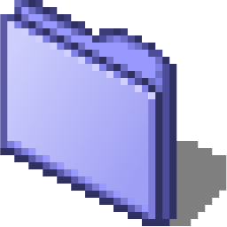
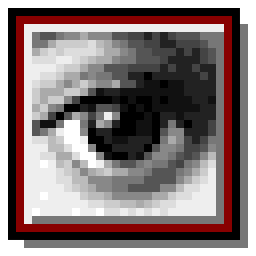
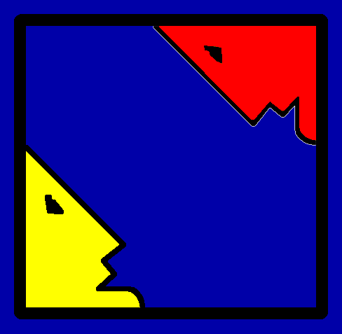
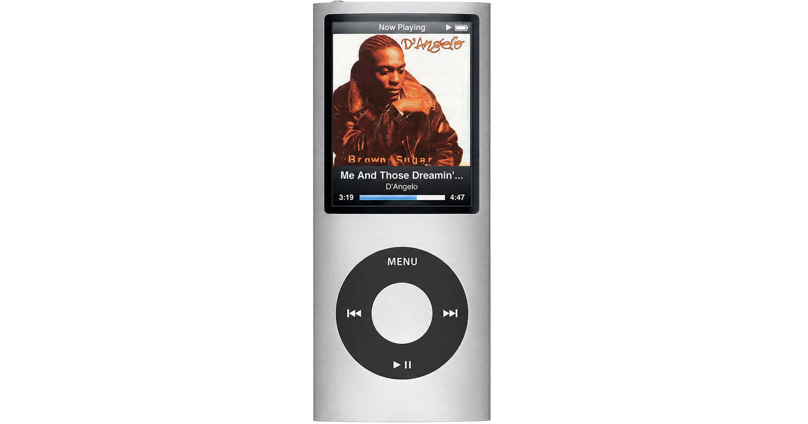
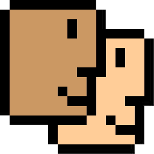
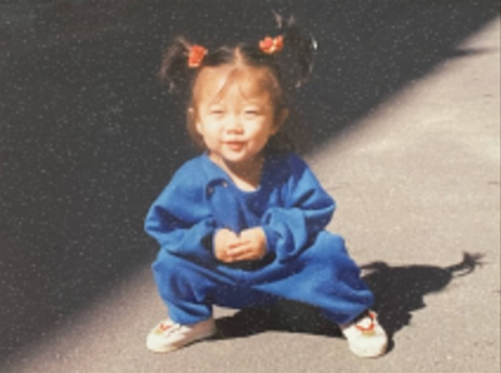
Sejeong LEE
Product Designer, Seoul
여기까지 와주신 당신... 반갑습니다
도대체 포폴이란 뭘까요?
정리하는게 엄두가 나질 않아
'그냥 맥북 열어 보여주고 싶다..'라는 생각으로 이 공간을 만들어봤어요
디자인도 디자인이지만 제가 좋아하는 컨텐츠들을
한 곳에 아카이브하고 싶은 욕심도 있었습니다ㅎㅎ
보고 듣을 것이 넘쳐나는 세상이지만
이 곳에서 취향에 맞는 컨텐츠 하나쯤은
발견하셨기를 바라며..*
Last updated 26-07-09
20xx, type something.. weirjiwej
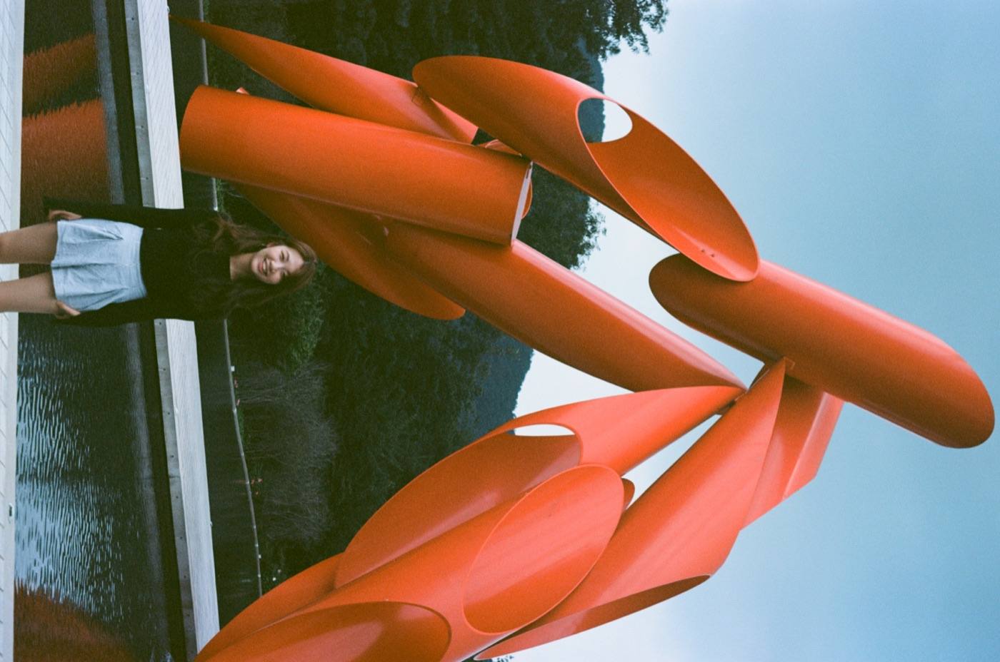
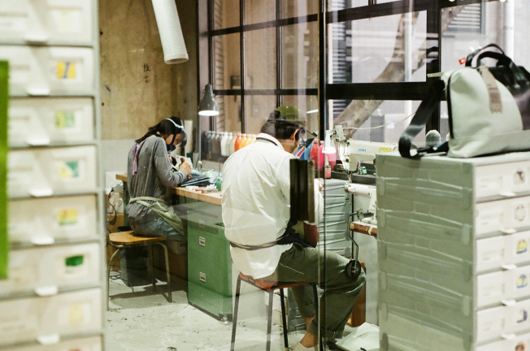
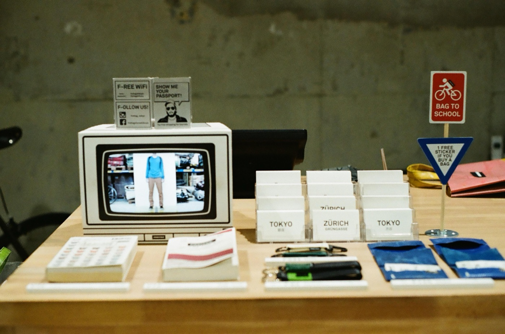
2017, FREITAG Store Tokyo, d
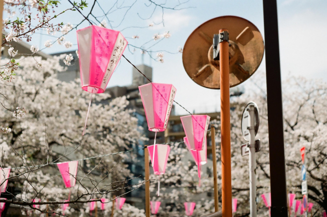
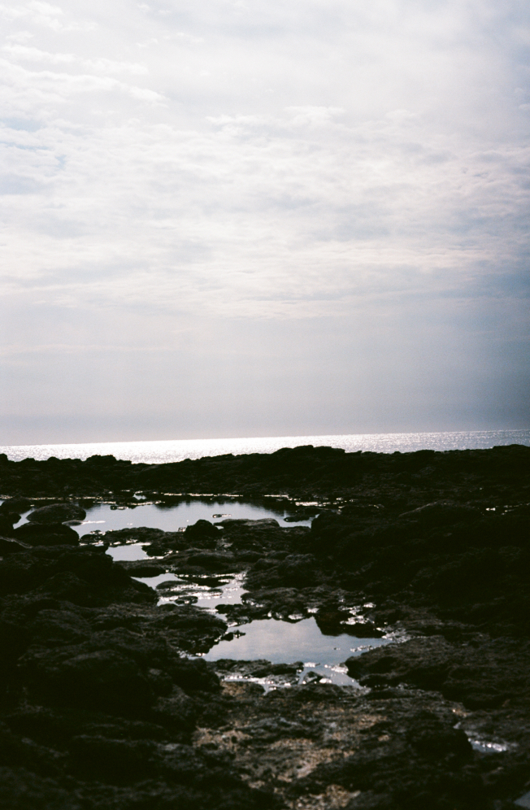